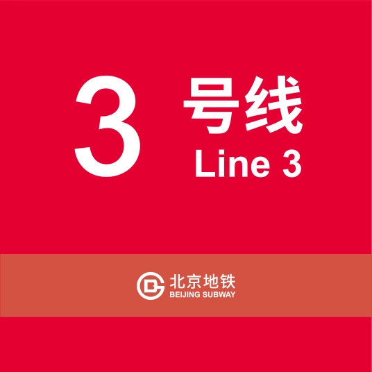
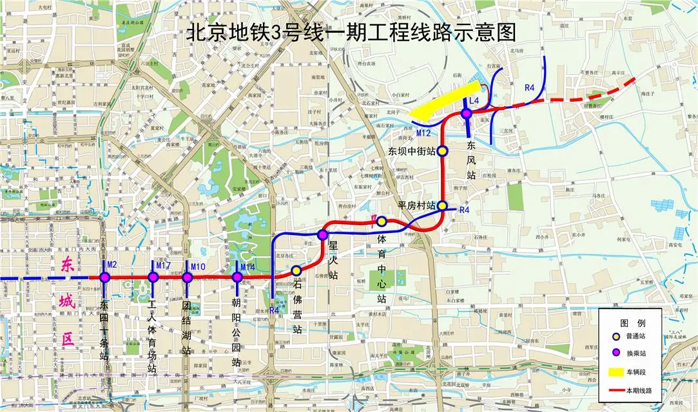
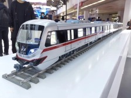

北京地铁3号线（Beijing Subway Line 3），是北京地铁正在建设的一条地铁线路，预计于2024年底开通运营一期。标志色为玫瑰红。
北京地铁3号线一期西段西起东城区东四十条站，东至朝阳区东坝北站，大致呈东西走向。
截至2023年4月，北京地铁3号线一期西段全长15.6千米，采用全地下敷设方式，共设10座车站；列车将采用4节、8节编组A型列车混跑。
2023年4月13日，北京第十二届轨道交通工程岗位技能竞赛在地铁3号线星火站(北京朝阳站)施工现场举办。2023年，全市在建轨道交通工程里程达231公里，主要线路包括3号线一期、6号线南延等11条线路。位于朝阳区的地铁3号线星火站现已实现主体结构完工，将启动后续装饰装修。
线路走向

车辆设施
null

据北京日报2020年11月报道，北京地铁3号线车辆采用标准A型车，采用4辆、8辆灵活编组，在运营平峰期使用4节车厢运营，高峰期实现2组4节车厢连挂运营。一期列车共计40列，由中车青岛四方股份有限公司和河北京车共同制造。